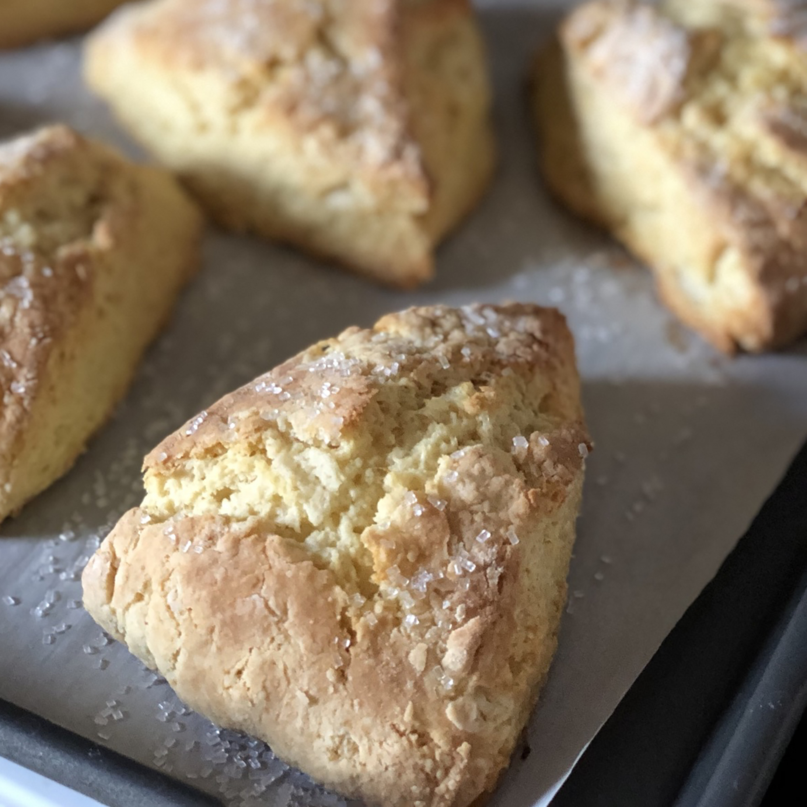

Mom's Simple Scone Recipe

Mom's Simple Scones
This is my mothers simple scone recipe, she made these for me all the time growing up and still prides herself on them to this day! They are great for a morning snack or even sharing with the family over tea. These scones will always be sure to delight your pallette.
Ingredients
- 2 3/4 All-Purpose Flour
- 1/3 cup sugar only 5tbls if a Savory scone
- 3/4 teaspoon salt
- 1 1/2 tablespoon baking powder
- 1/2 cup plus 2tbls cold butter. freeze then grate
- 2 large eggs
- 2 teaspoons vanilla extract or the flavoring of your choice
- 1/2 cup to 2/3 cup half and half or milk
- 1 cup to 2 cups chopped dried fruit, chocolate or other flavored chips, nuts, or a combination, optional
Topping
- 2 teaspoons milk
- 2 tablespoons sparkling white sugar or cinnamon sugar
Steps
- In a large mixing bowl, whisk together the flour, sugar, salt, and baking powder.
- Work in the butter just until the mixture is unevenly crumbly; it's OK for some larger chunks of butter to remain unincorporated.
- Stir in the fruit, chips, and/or nuts, if you're using them.
- In a separate mixing bowl, whisk together the eggs, vanilla or other flavor, and half and half or milk.
- Add the liquid ingredients to the dry ingredients and stir until all is moistened and holds together.
- Line a baking sheet with parchment; if you don't have parchment, just use it without greasing it. Sprinkle a bit of flour atop the parchment or pan.
- Scrape the dough onto the floured parchment or pan, and divide it in half. Round each half into a 5" circle (if you haven't incorporated any add-ins); or a 6" circle (if you've added fruit, nuts, etc.). The circles should be about 3/4" thick.
- Brush each circle with milk, and sprinkle with coarse white sparkling sugar or cinnamon sugar, if desired.
- Using a knife or bench knife that you've run under cold water, slice each circle into 6 wedges.
- Carefully pull the wedges away from the center to separate them just a bit; there should be about 1/2" space between them, at their outer edges.
- For best texture and highest rise, place the pan of scones in the freezer for 30 minutes, uncovered. Chilling the scones relaxes the gluten in the flour, which makes the scones more tender and allows them to rise higher. It also chills the fat, which will make the scones a bit flakier. While the scones are chilling, preheat the oven to 425°F.
- Bake the scones for 20 to 25 minutes, or until they're golden brown.
- Remove the scones from the oven, and cool briefly on the pan. Serve warm. They're delicious as is, but add butter and/or jam, if you like.
Previous: Mom's Classic Cookies
Next: Sunny Spinach Pie
Main Page